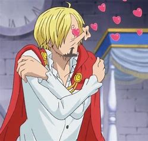

Vinsmoke Sanji
Melhor personagem de One Piece


Sobre
"Perna Negra" Sanji nascido como Vinsmoke Sanji,e também é o cozinheiro dos Piratas do Chapéu de Palha, assim como um antigo chefe de cozinha do Baratie.
Ele também é o terceiro filho e a quarta criança da Família Vinsmoke, tornando-o um príncipe do Reino Germa,até que ele oficialmente os renunciou duas vezes.
Apesar de Sanji renunciar ao seu sobrenome Vinsmoke, o Governo Mundial o rotula como parte de seu nome em seu pôster de procurado.